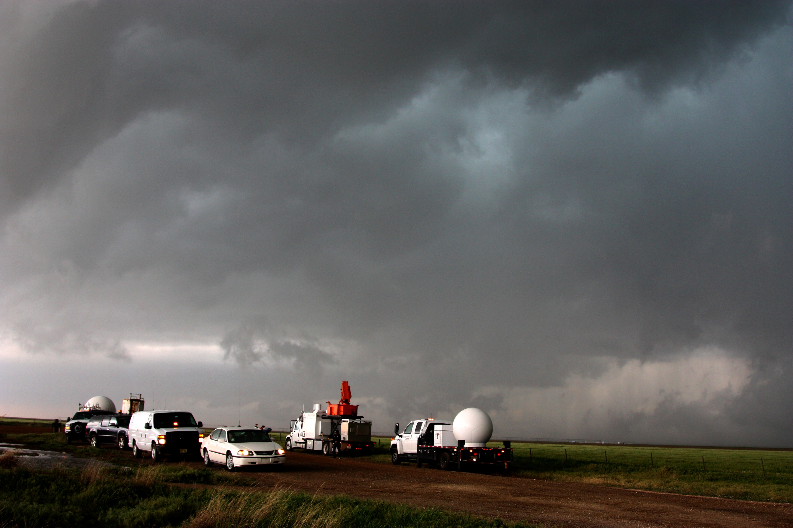

Rainbow Over the Valles Grande. The closest city to this location is Los Alamos.

A tornado thaat touched down in Wyoming, United States

A fleet of VORTEX2 vehicles tracks a supercell thunderstorm near Dumas. The blue-green color in the cloud is associated with large hail.